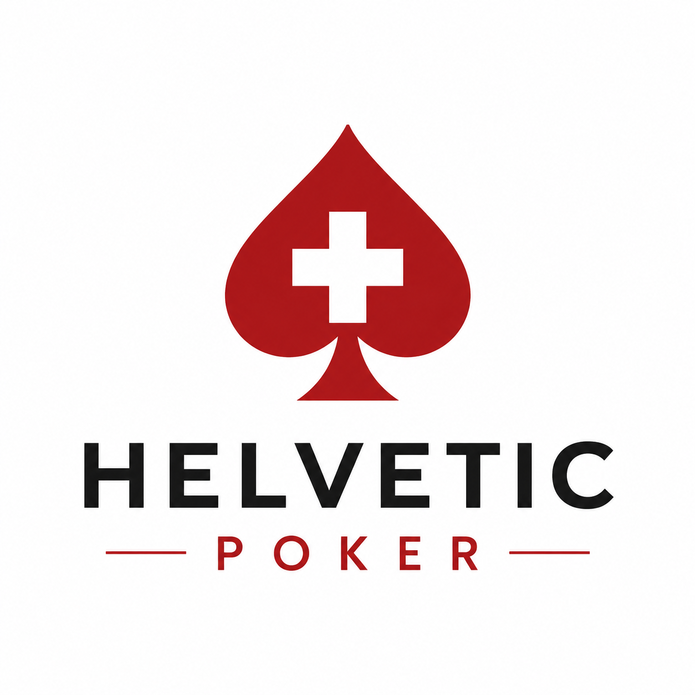

← Zurück zum Schweizer Pokerkalender
Turnier
24Poker
Veranstalter
Kristinas Super Stack 150K
2026-10-04 · 15:00 Uhr
Oberentfelden (AG) · 24Poker
Veranstalter: 24Poker
Nicht angegeben · CHF 100 + 30
Zum Veranstalter →
✓ Aktuell geprüft · zuletzt geprüft: 2026-10-01